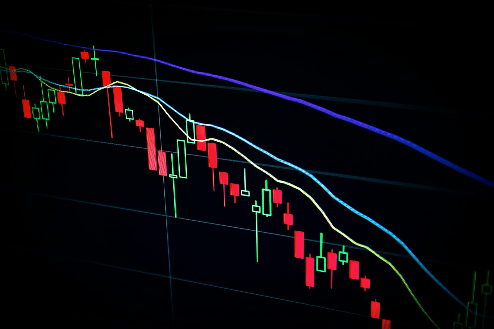
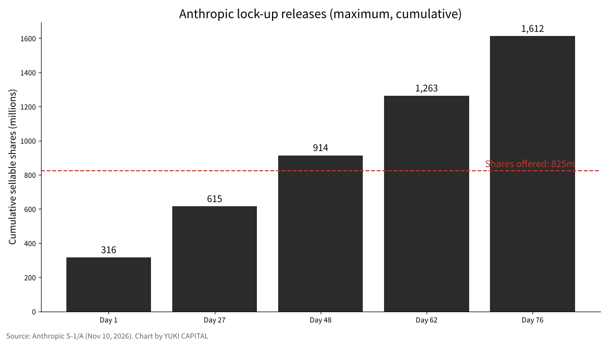
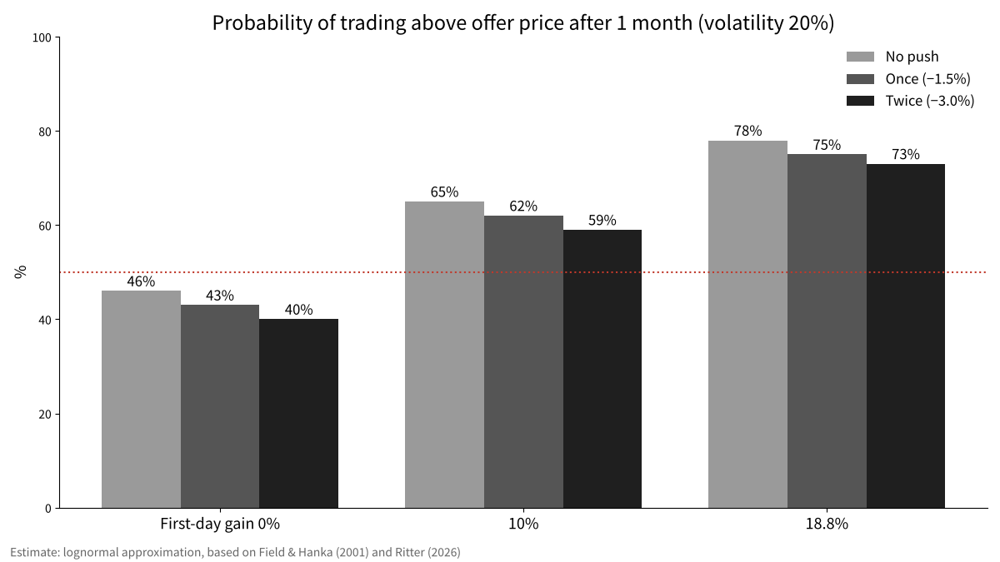

Up to 1.6 billion Anthropic shares within 76 days of listing: what the S-1/A lock-up table and Field and Hanka imply for the odds of trading above the offer price after one month
Anthropic plans to list on Nasdaq on November 19, with a price range of $70 to $78 per share and 825 million shares on offer.
On listing day, attention goes to the first price. What moves a stock for longer is the volume of shares that reaches the market afterwards.
The question of this article: as the lock-up (the restriction on selling) is lifted in stages, how likely is the share price to be above the offer price one month after listing?
- According to the S-1/A of November 10, up to 316 million shares can be sold from day one, and up to 1.612 billion cumulatively by day 76. The first month alone equals about 75% of the shares offered.
- Past research finds that share prices fall about 1.5% on average in the three days around a lock-up expiry. Assuming two such hits in the first month (−3%), the estimated probability of trading above the offer price after one month is about 40% if the first-day gain is zero, and about 59% if it is 10%.
- The first-day gain moves the result most; volatility and the number of unlocks matter less. The estimate rests on stated assumptions and is not a forecast.

Question and background
A lock-up is an agreement under which pre-IPO shareholders and officers promise not to sell their shares for a set period after listing. The U.S. Securities and Exchange Commission (SEC) describes that period as "typically 180 days" [5].
Anthropic's arrangement does not end all at once at 180 days. The amended prospectus (S-1/A) filed on November 10 shows how many shares become sellable at each stage: day one, day 27, day 48, day 62 and day 76 [1]. For most holders the restriction runs 180 days; for the co-founders and certain others it runs up to 365 days [1]. For anyone buying on listing day, this schedule is the only official document that shows when sellers may grow in number.
Size matters too. Multiplying the 825 million shares on offer by the $70–78 range gives proceeds of roughly $57.75 billion to $64.35 billion. Alongside the listing, Anthropic also plans to allocate about $26 billion of shares to specific investors [1]. After listing there will be about 13.087 billion shares outstanding, so the shares that can trade freely start at just over 6% of the total [1].
The offer price is the price fixed before listing, at which subscribing investors receive their shares. The first-day price here means the closing price on the first day of trading.
Data and method
Five sources are used: (1) the "Shares Eligible for Future Sale" table in Anthropic's S-1/A of November 10, 2026 [1]; (2) Field and Hanka's 2001 paper on lock-up expiries and share prices [2]; (3) Ofek and Richardson's 2000 study on the same subject [3]; (4) Professor Jay Ritter's statistics on U.S. IPOs [4]; and (5) the SEC's investor guidance [5].
The method has three steps. First, add up the shares that become sellable at each stage and compare them with the shares offered. Second, take the average price decline around an unlock reported in the literature and apply it as a downward push once for each unlock that falls within the first month.
Third, compute the probability that the price after one month is above the offer price. One month is taken as about 21 trading days. The one-month move is approximated by a lognormal distribution: the first-day gain plus the push, minus half the squared volatility, divided by the volatility, is fed into the standard normal distribution. "Volatility" here is the standard deviation of a one-month move, varied from 15% to 25% based on large technology listings.
Average drift, apart from the push, is set to zero. Over a period as short as one month, supply and demand and first-day momentum are likely to move the price more than the company's growth or the market as a whole.
Results
Adding up the S-1/A table gives the following [1]. All figures are maximums; not all of these shares will necessarily be sold.
| Days after listing | Shares becoming sellable | Cumulative | Share of the 825 million shares offered |
|---|---|---|---|
| Day 1 | 316 million | 316 million | 38% |
| Day 27 | 299 million | 615 million | 75% |
| Day 48 | 299 million | 914 million | 111% |
| Day 62 | 349 million | 1,263 million | 153% |
| Day 76 | 349 million | 1,612 million | 195% |

Two stages fall within the first month: day one and day 27. In addition, the roughly 351.35 million shares allocated in the concurrent placement are not subject to the lock-up [1]. Right after listing, far more shares can move than the offering alone would suggest.
As a share of shares outstanding, the freely tradable portion rises from about 6.3% at listing to about 8.7% after the day-one release and about 18.6% by day 76. These numbers look small, but against daily trading volume they are large enough to change supply and demand.
Field and Hanka studied 1,948 lock-up expiries from 1988 to 1997 and found that share prices fell 1.5% on average over the three days around expiry, while trading volume stayed 40% higher afterwards [2]. Ofek and Richardson found a 2.03% decline over the five days up to expiry in 1,056 cases from 1996 to 1998 [3]. From this, a push of 1.5% per unlock is assumed.
By day 48, the cumulative number of sellable shares exceeds the shares offered. In less than two months after listing, more shares than first reached the market may join the selling side.
Sensitivity analysis
Three assumptions were varied: the first-day gain (0%, 10%, 18.8%), one-month volatility (15%, 20%, 25%), and the number of pushes (zero, one, two). The 18.8% figure is the average first-day gain of U.S. IPOs since 1980 compiled by Professor Ritter [4].
| Push | Volatility | First-day gain 0% | First-day gain 10% | First-day gain 18.8% |
|---|---|---|---|---|
| None | 20% | 46% | 65% | 78% |
| 1.5% (once) | 20% | 43% | 62% | 75% |
| 3.0% (twice) | 15% | 39% | 64% | 81% |
| 3.0% (twice) | 20% | 40% | 59% | 73% |
| 3.0% (twice) | 25% | 40% | 55% | 67% |

Two things can be read from the table. If the first-day gain is zero, the probability is below 50% under every assumption. Even with two pushes, the difference is only a few points, much smaller than the gap created by the first-day gain (more than 30 points at the same volatility).
Discussion
There is an opposing view. Many of Anthropic's shareholders are large institutions that intend to hold for a long time and may not sell even when released. The unlock schedule is also published in advance, so in an efficient market it should already be in the price [3].
On the other hand, Field and Hanka also show that the decline at expiry is larger for venture-backed companies [2]. Anthropic has raised a great deal of large-scale capital, which may strengthen the push.
Another reading is that splitting the release into small stages is itself a way to soften the push. Releasing 1.6 billion shares at once differs from releasing about 300 million every two to three weeks in how much buyers can absorb. In that sense, the papers' average of 1.5% may be too large an assumption for Anthropic.
SpaceX, which listed the same year, is reported to have split its lock-up into nine stages. With large listings following one another, staged releases may be becoming the norm.
Limitations: the papers cover IPOs from 1988 to 1998, which differ in size and era. Approximating a one-month move with a lognormal distribution underestimates periods when large moves come in a row. The test of this estimate is whether the closing price around December 19 (about one month after listing) is above the offer price.
Conclusion
Judging from the lock-up table, up to 1.612 billion shares, about twice the shares offered, become sellable within 76 days of listing. The first month alone accounts for about 75% of the shares offered.
In the estimate, the probability of trading above the offer price after one month depends largely on the first-day gain: around 40% if the gain is zero, and 60–80% if the gain is 10–20%. The push from unlocks lowers the probability by a few points but is not the main driver.
Over a longer horizon, the releases on day 180 and day 365 are larger. How many buyers have grown by then probably matters more for the share price than the one-month odds.
How I see it
I live in Japan, and I intend to buy about ¥10 million (roughly $63,000) worth of Anthropic shares after listing and hold them for 10 to 20 years. On listing day I will not call my broker; I will watch.
For one month out, I think the price will be higher. Even so, I expect a period sometime next year when it falls below the offer price. If the price falls while the unlocks continue, that is when I will add. I see this table as a map of when that day is likely to come.
Sources
- Anthropic, PBC, "Form S-1/A (Amendment No. 2), Shares Eligible for Future Sale," SEC EDGAR, November 10, 2026 https://www.sec.gov/cgi-bin/browse-edgar?company=anthropic&type=S-1
- Laura Casares Field and Gordon Hanka, "The Expiration of IPO Share Lockups," Journal of Finance 56(2), 2001 https://ideas.repec.org/a/bla/jfinan/v56y2001i2p471-500.html
- Eli Ofek and Matthew Richardson, "The IPO Lock-Up Period: Implications for Market Efficiency and Downward Sloping Demand Curves," NYU Stern, 2000 (as summarized by Cochrane) https://www.johnhcochrane.com/s/internet-and-demand-curves.pdf
- Jay R. Ritter, "Initial Public Offerings: Sales Statistics Through 2025," University of Florida, January 1, 2026 https://site.warrington.ufl.edu/ritter/files/IPOs-Sales.pdf
- U.S. Securities and Exchange Commission, "Lock-up agreement" (Investor.gov glossary) https://www.investor.gov/introduction-investing/investing-basics/glossary/lock-up-agreement
- FourWeekMBA, "Up to 1.6B Anthropic Shares Unlock Within 76 Days of IPO" (summary of the S-1/A table), November 2026 https://fourweekmba.com/ai-up-to-1-6b-anthropic-shares-unlock-within-76-days-of-ipo/
- Motley Fool, "Anthropic set its IPO price range at $70 to $78," November 13, 2026 https://www.fool.com/investing/2026/11/13/anthropic-set-its-ipo-price-range-at-70-to-78-valuing-it-at-up-to-1405-trillion/
- Webull, "What SpaceX's Lockup Expiry Could Mean for Anthropic's IPO Strategy," November 2026 https://www.webull.com/news/15581005814711296
Photo: Maxim Hopman (Unsplash). Charts by YUKI CAPITAL
I record my daily numbers and decisions on X.